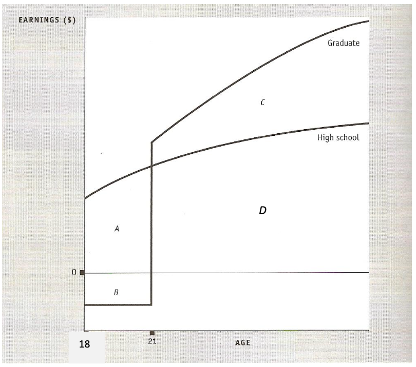
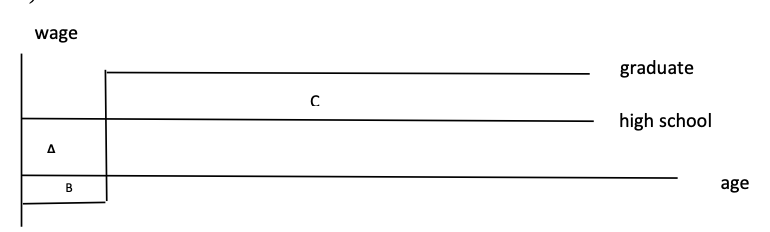
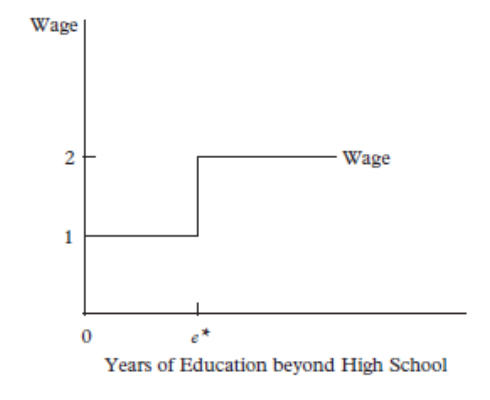
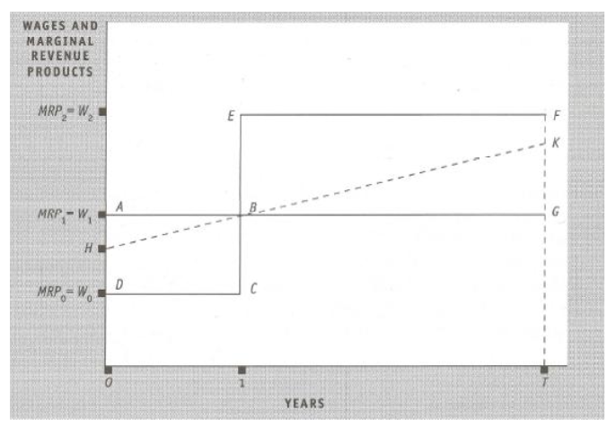

7. Education and Training
🎓 Is a university education a good investment?
The decision to attend university is fundamentally an investment decision. Individuals sacrifice current consumption and earnings (costs) in exchange for higher productivity and wages in the future (returns).
The Three Sources of Skills
🧬 1. Inherited Personal Characteristics
Before a student ever set foot in a classroom, they possess a "raw baggage" of intelligence, natural talent, and motivation. These traits are heavily influenced by the family environment—both genetically and through early childhood stimulation. This source of skill is crucial because it often determines the *efficiency* of future learning; naturally gifted or highly motivated students often gain more "human capital" from the same year of schooling than others.
📚 2. Skills Acquired via Formal Education
This is the visible part of the iceberg. Schools and universities provide structured environments to acquire technical knowledge (like coding or accounting), analytical frameworks, and social skills. In the Human Capital model, this process is seen as a direct transformation: the student "buys" schooling to increase their future marginal productivity, which the market will then reward with a higher wage.
💼 3. Skills Acquired via Experience (On-the-Job)
Learning doesn't stop at graduation. Most professional skills are acquired through "learning by doing"—the informal process of mastering tasks through repetition and exposure to real-world problems. This accumulates into a distinct type of human capital that is often highly valued by employers, as it proves the worker can translate theoretical knowledge into practical results.
If we observe that university graduates earn 50% more than high schoolers, can we conclude that university *caused* the increase? Not necessarily. Highly talented people (Source 1) might be more likely to go to university *and* more likely to earn high wages anyway. If we ignore this "Ability Bias," we overstate the true return to education. Economists use twins or natural experiments to try and isolate the "pure" effect of schooling.
📖 Human Capital Theory
Gary Becker (1975) formalized the idea that education increases a worker's productivity. In his framework, education is not consumption — it is an investment in human capital. Just as a firm invests in machinery to produce more output, a worker invests in schooling to become more productive and, consequently, earn higher wages. The empirical regularity is clear: on average, more highly educated workers earn more than less educated ones.
📊 Table 1: Average Gross Monthly Earnings by Education & Gender (CR, 2024)
📈 The Economics of Schooling: Costs vs. Returns
Education is a long-term investment. To decide whether to enroll, we must compare the immediate costs with the discounted flow of future benefits. The key question is: is the sacrifice of 3–5 years of earnings and effort worth the lifetime of higher wages?
1. Lifetime Earnings Profiles

Figure 1: Average gross monthly earnings by education and age, CR, 2024. Source: Czech Statistical Office.
Three Key Observations from Figure 1:
- Level Effect: At every age bracket (from <19 to 65+), higher education levels correspond to higher earnings. The gap between "primary" and "tertiary" is massive and persistent throughout the entire career.
- Slope Effect: Earnings profiles are steeper for highly educated workers. This means their wages grow faster over time — they accumulate human capital more rapidly through experience.
- Peak Effect: The earnings of tertiary-educated workers usually peak later in life (around age 50–54 in the CR in 2024), while vocational workers peak earlier and then plateau. This is because highly skilled jobs reward accumulated expertise more than physical stamina.
2. The Basic Investment Model

The decision at age 18: A + D = high school earnings; C + D = university earnings. Go if C > A + B.
💸 Costs of Education
- Area A — Forgone Earnings: The biggest cost is not tuition — it's the salary you didn't earn during 3–5 years of study. This is the opportunity cost: while you sit in a lecture hall, your former classmates are earning a full wage.
- Area B — Direct Expenses: Tuition fees (where applicable), textbooks, supplies, and accommodation costs if the student must relocate to attend university.
- Psychic Losses: Learning is often difficult and tedious. The stress of exams, the frustration of failure, and the mental effort required are real costs that affect well-being, even if they don't appear in a bank account.
📈 Expected Returns
- Area C — Higher Future Earnings: The primary quantifiable return — the wage premium a graduate earns over a non-graduate for every remaining year of their career.
- Nonmarket Benefits: Increased satisfaction over a lifetime, greater appreciation of culture, arts, and civic participation. These are real but hard to measure in monetary terms.
3. The Present Value Concept
Because costs occur now and benefits occur in the future, we cannot simply add them up. A Euro today is worth more than a Euro in 10 years because of the time value of money. We must discount future cash flows to their present value.
In 1 Year
In 2 Years
In N Years
⚖️ Investment Decision Models
There are two complementary methods to measure whether the HC investment criterion is met. Both use the Present Value concept, but they approach the problem from different angles.
1. The Present-Value Method
The idea is simple: specify a value for the discount rate $r$ (typically the market interest rate), and then compute whether the present value of future benefits exceeds costs. If it does, the investment pays off at that interest rate.
Rule: If $PV_{Benefits} > PV_{Costs}$, the investment is profitable at rate $r$.
2. Internal Rate of Return (IRR)
Instead of choosing $r$, we ask: "How large could the discount rate be and still make the investment profitable?" We find the special rate $r^*$ that makes costs and benefits exactly equal, and then compare $r^*$ to the market interest rate.
Rule: If $r^* > r_{market}$, the investment is worthwhile.
🇨🇿 Case Study: The 3-year Bachelor's Degree
Let's apply the Human Capital model to real-world data from the Czech Republic (2024 estimates). Decision made at age 18, expected retirement at 65 (47-year period). Simplifying assumption: wage profile stable over time (we use the average wages from Table 1).
Method 1: Present-Value Calculation (r = 1%)
PV of Costs (3 years of study: t = 0, 1, 2)
PV of Benefits (44 years of premium: t = 3, 4, ..., 46)
Method 2: Internal Rate of Return
We set the PVs of costs and benefits equal and solve for $r$:
🔮 Predictions of the Theory
1. Students are Young
Most university students will be young because the younger you are when you invest, the more years of "return horizon" you have to reap the benefits ($T - s$ is large). For a 40-year-old, the payback period is so short that the investment rarely pays off.
2. Costs ↑ → Attendance ↓
If a tuition fee is introduced in the CR (or costs increase), university attendance will decrease. This is amplified if there is a credit constraint — students from poorer families who cannot borrow to finance their studies are excluded entirely.
3. Wage Gap ↑ → Attendance ↑
If the earnings gap between university graduates and high school graduates widens, the benefits of education increase, making university more attractive and boosting enrollment.
⚠️ Problems of Estimating Returns to Education
Market Responses (Flooding Effect)
High returns to tertiary education attract more students today. But as these graduates flood the labour market, market forces will lower the returns to tertiary education in the future. This creates uncertainties about expected payoffs — current estimates of future returns may be unrealistic because they don't account for the supply response.
Ability Bias (Overestimation)
The role of education is overestimated because it is hard to distinguish between the contribution of ability and of education to higher earnings. Some people with degrees would earn more even without a degree — their innate talent drives both outcomes. Moreover, socioeconomic family background is correlated with both attained education level and future earnings.
🧠 Human Capital vs. Signaling
Human Capital theory (HC) says an additional year of education increases your productivity — and therefore your wage. Screening & Signaling hypothesis (S&S) by Michael Spence (1973) says the opposite: educational systems serve as a means to find out who is productive, and do not increase individuals' productivity. Education is just a filter.
📉 1. The Signaling & Screening Model (Spence, 1973)

The Threshold Effect: Employers set $e^*$. Degrees act as binary switches for wage levels ($W=1 \to W=2$).
🧠 The Logic of Signaling
- ⚡ Asymmetric Information: A employer looking at a pile of CVs is like a blind person choosing fruit. They can't "see" your true productivity. They need a credible proxy—a signal—that you are indeed a "sweet" (high-productivity) worker.
- ⚡ Visibility & Cost: For a degree to be a signal, it must be expensive enough that low-productivity workers won't "fake it." Crucially, this cost is not just tuition; it is the Psychic Cost of effort, stress, and time.
- ⚡ The Cost Differential: The model only works if it is *harder* (more costly) for a low-ability person to graduate than for a high-ability person. If everyone could pass easily, the degree would lose all its value as a signal.
📐 The Spence Model: Numerical Setup
- Productivity = 1
- Cost of each year of education = C
- Net gain of signaling: $2 - 1 = 1$ (wage gain) minus $C \cdot e^*$ (cost)
- Will signal only if $1 > C \cdot e^*$, i.e., $e^* < 1/C$
- Productivity = 2
- Cost of each year of education = C/2 (smarter, learn faster)
- Net gain of signaling: $2 - 1 = 1$ (wage gain) minus $(C/2) \cdot e^*$ (cost)
- Will signal only if $1 > (C/2) \cdot e^*$, i.e., $e^* < 2/C$
- Low-ability workers find it too expensive to get $e^*$ → they choose 0 years of education → receive wage = 1
- High-ability workers find it worth it → they get exactly $e^*$ years → receive wage = 2
Result: Schooling attainment signals productivity! Employers use education as a screening device. Under the extreme S&S hypothesis, the social rate of return to education is misleading because there is no causal link between education and productivity.
2. How to test HC vs. S&S empirically?
Empirical testing is not easy — some attempts have produced mixed evidence. Here are the key tests economists have designed:
🎓 University Dropouts
Those who enter but do not finish university. Under HC, they should still have higher productivity (they learned something). Under S&S, they have no signal (no diploma), so no wage premium. If dropouts still earn more than non-attendees, this supports HC.
📚 School Quality
Under HC, attending a higher-quality school (better teachers, resources) should lead to higher productivity and wages because you actually learn more. Under S&S, school quality should matter less because the diploma is the signal, not the content learned.
🚀 The Self-Employed Test
A plumber who works for himself doesn't need to impress a boss with a fancy diploma. Under S&S, self-employed should acquire lower educational levels since they don't need the signal. In reality, they often have similar levels, which suggests that Human Capital (actual skill gain) is still a major factor.
🔬 Field of Study
Under HC, workers who study the field they actually work in should earn higher wages (their education directly boosted their job-specific productivity). Under S&S, there should be no difference in wages according to the subject studied — the diploma itself is all that matters.
🎓 The "Sheepskin" Effect
Why is the final year of university "worth" more than the 3rd? If education only increased skills (HC), the wage jump per year should be smooth. However, we see a massive spike in wages the moment you get the diploma (the sheepskin). This supports S&S: the diploma is a credentialing signal — a finish line that proves to employers you have the persistence and ability to complete the degree.
📉 The Mincer Earnings Function
Why the Logarithm of Wages?
Statistical reason: Wage distribution is typically right-skewed (many people earn below-average and only few earn very high wages). Taking $\ln(W)$ brings the distribution closer to normal, making OLS regression more reliable.
Interpretation advantage: When the dependent variable is in $\ln$, we can roughly interpret the coefficients as a % increase in wage per one-unit increase in education (ceteris paribus).
Proper Interpretation: $e^{\beta}$ shows the % increase of the geometric (not arithmetic) mean of wages. With a one-unit increase of education, we expect to see $e^{\beta}$ times higher geometric mean wage.
sec_educ = 0.3827$e^{0.3827} = 1.466$
→ Secondary educated had on average 1.466 times higher wages (geometric mean) than those with primary education → +46.6%
Why Experience Squared? (Concavity Proof)
Using Czech OLS estimates as an example:
Taking the first derivative with respect to $E$:
- For $E < 26.4$, the function is increasing (wages rise with experience)
- For $E > 26.4$, the function is decreasing (wages start declining — diminishing returns)
Second derivative: $\frac{\partial^2 \ln W}{\partial E^2} = -0.001 < 0$ → Concave (bell-shaped earnings profile).
💼 Job Training & Human Capital
Training is the continuation of human capital investment after formal schooling. It occurs through formal training programs, learning by doing (skills improving with practice), and informally by working with a more experienced colleague. Training attendance declines with age because the time left to reap returns shrinks.
The Training Model: A Numerical Example
- Consider a one-year training program that increases worker productivity
- Without training: wage = $W_1$ (baseline)
- During training: wage = $W_0 < W_1$ (lower productivity, part of hours spent at training)
- After training: productivity rises to $W_2 > W_1$ in all subsequent years
- Costs = lost output during training (Area ABCD in the figure)
- Returns = higher post-training productivity (Area EFGB in the figure)

Costs = Area ABCD (lost output during training). Returns = Area EFGB (higher post-training productivity).
🔵 Case 1: General Training
Skills transferable across firms (e.g., driving, statistical software, languages). The worker has a higher productivity of $W_2$ and can apply for it in a wide range of firms. If the current employer doesn't pay $W_2$, the worker simply leaves. Therefore, the employer shifts all costs to the worker by paying $W_0$ during training. Wage profile: DCEF. Costs paid entirely by the employee.
🔴 Case 2: Specific Training
Skills useful only in the current firm (proprietary software, internal workflows). The worker's productivity in any other firm won't be higher (would get $W_1$ elsewhere). Seemingly, the firm could pay $W_1$ forever (profile ABG) and bear all costs. But the worker has strong bargaining power: if they leave, the employer loses the entire investment ABCD. Solution: Wage profile HBK — costs and benefits are shared. Both parties have an incentive to prolong employment.
⚖️ Social Rate of Return to Education
Governments must decide if the expected social benefits of increased productivity outweigh the opportunity costs of investing more social resources in the educational sector. Again, the present-value method or the internal rate of return method can be used.
Social Costs
- Opportunity costs: The loss to society of the potential output during the studies of the student (they could have been producing goods/services).
- Direct costs of operating universities: Staff salaries, running expenses, infrastructure — all funded by the government at state universities.
Social Benefits
- Greater outputs: Returns can be measured as the difference between earnings of the graduate and the non-graduate.
- Positive externalities: Higher education of one worker positively stimulates productivity of co-workers; in a more educated workforce, innovations can be spread more quickly.
Two Extra Assumptions (not needed for private returns)
When computing social returns, two additional assumptions are required that were not necessary for calculating private returns:
- Earnings approximate marginal productivity — i.e., the wage reflects the true social value of the worker's output.
- Higher marginal product is caused by the extra education received — this is the core assumption of Human Capital theory. If S&S is correct, this assumption fails and the social returns are overstated.
If social benefits are larger than private benefits (due to positive externalities like innovation diffusion and productivity spillovers), then the social rate of return exceeds the private rate, justifying public subsidies. However, others claim that the returns to society are smaller than expected because education does not increase productivity (the S&S critique) — it's just an expensive sorting mechanism.